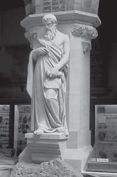
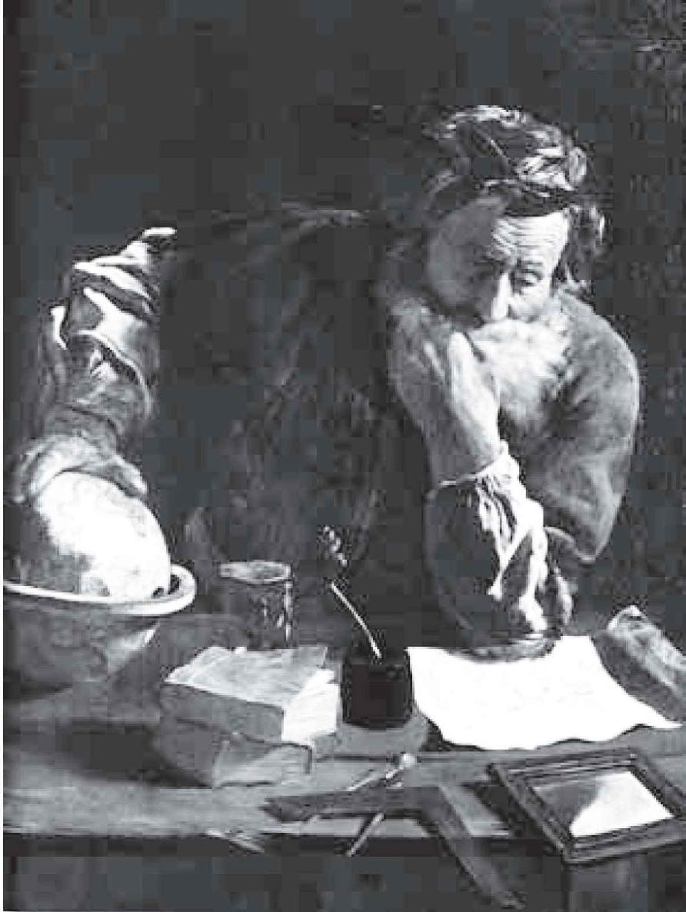
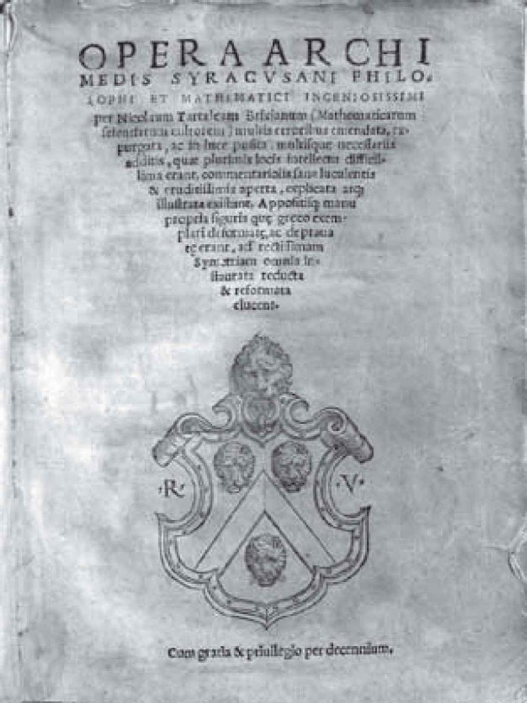
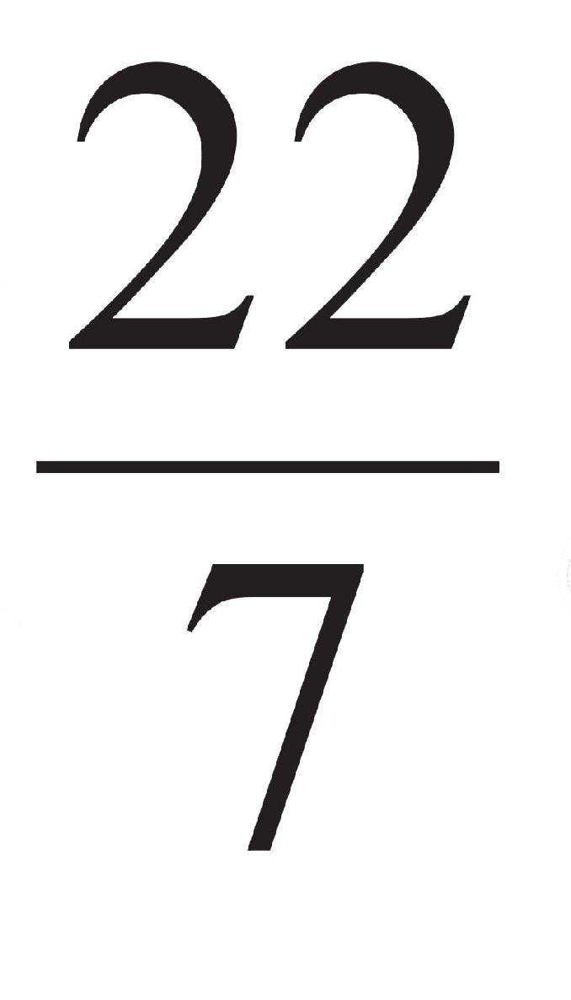
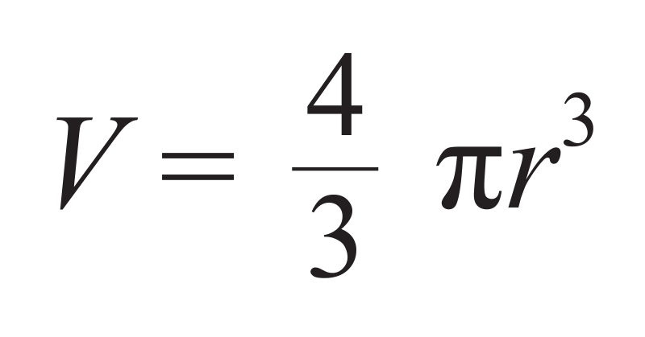
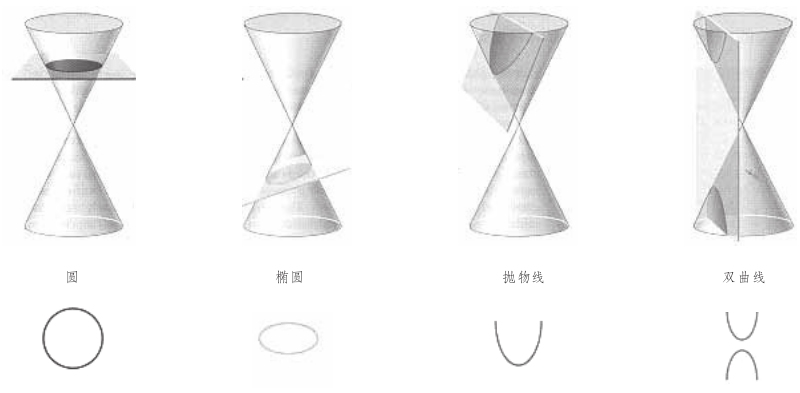
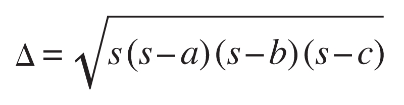
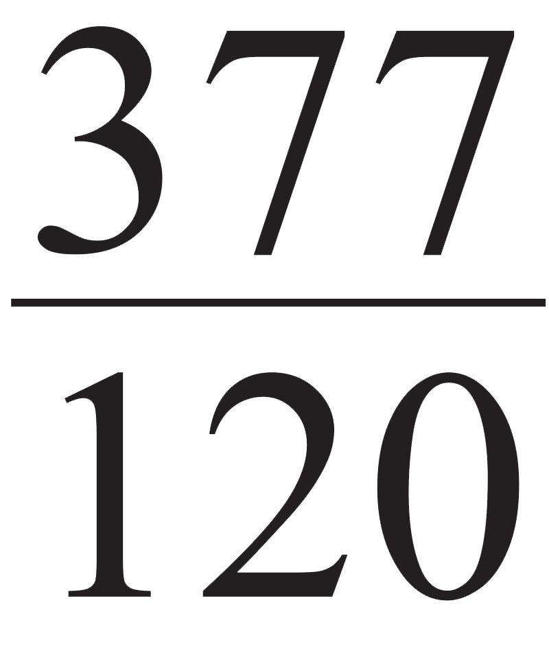
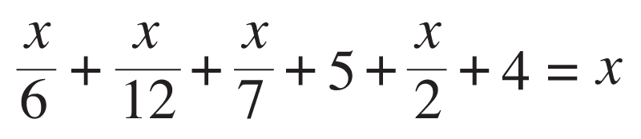
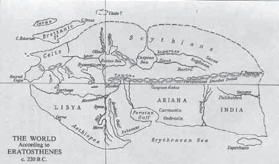

比起我们前面讲到的人物，欧几里得（Euclid）的出生时间要晚许多，但却没有留下任何生活细节或线索。我们甚至不知道他到底出生在哪个洲，欧洲、亚洲还是非洲？这是数学史上的一个难解之谜，至于他的生卒年我们更是无从知晓。我们只知道，他曾在雅典的柏拉图学园学习，后来（大约在公元前300年）受聘来到埃及的亚历山大大学数学系任教，并留下一部《几何原本》（Elements ）的著作。其实，英文书名的本意是“原本”。由于这部书作为教科书被广泛地使用了2000多年（今天初等数学的主要内容仍源于它），加上数学对人类智慧的重要性，欧几里得被视为所有纯粹的数学家中对世界历史的进程最有影响力的一位。

欧几里得塑像
现在，我必须介绍一下亚历山大这座城市。在伯罗奔尼撒战争以后，希腊处于政治上的分裂时期，北方的马其顿人乘虚而入，不久便攻陷了雅典。等到年轻的亚历山大继承了马其顿帝国的王位，在为希腊的文明折服的同时，他也产生了征服世界的野心。在他的军队取得节节胜利的同时，他选择在良好的位置建造一座座新的城市。当亚历山大占领埃及之后，他在地中海边的一个地方（开罗 [1] 西北方向200多公里处）建起一座以他的名字命名的城池，那是在公元前332年。他不仅请来最好的建筑师，还亲自监督规划、施工和移民。
9年以后，亚历山大远征印度回来，在巴比伦暴病身亡，年仅32岁。之后，他的庞大帝国一分为三，但仍然联合在希腊文化的旗帜下。等到托勒密统治埃及时，他把亚历山大定为首都。为了吸引有学问的人来到这座城市，他下令建立了著名的亚力山大大学，其规模和建制堪与现代大学媲美。该大学的中心是一个大图书馆，据说藏有60多万卷纸草书。自那以后，亚历山大便成为希腊民族精神和文化的首都，并持续了将近1000年。直到19世纪和20世纪，希腊最负盛名的现代诗人卡瓦菲（C.P.Cavafy，1863—1933）仍选择在亚历山大度过大半生。
欧几里得正是在上述背景下来到亚历山大的，他的《几何原本》应该是在此期间写成的。书中提出的有关几何学和数论的几乎所有定理在他之前就已经为人知晓，使用的证明方法也大体如此。但他却将这些已知的材料做了整理和系统的阐述，包括对各种公理和公设做了适当的选取。后一项工作并不容易，需要超乎寻常的判断力和洞察力。之后，他非常仔细地将这些定理做了安排，使得每一个定理都与以前的定理在逻辑上保持一致。欧几里得因此被公认为古希腊几何学的集大成者，《几何原本》问世以后，很快就取代了以前的教科书。
欧几里得之所以能做到这一点，应与他在柏拉图学园所受的熏陶有关。柏拉图强调终极实在的抽象本性和数学对于训练哲学思维的重要性，在他的影响下，包括欧几里得在内的一些数学家将理论从实际需要中分离出来。在这部古代世界（也可以说是所有年代）最著名的教科书里，欧几里得从定义、公设和公理出发，他把点定义为没有部分的一种东西，线（现在称为弧线或曲线）是没有宽度的长度，直线是其上各点无曲折排列的线，等等。全书共分13篇，其中第1~6篇讲的是平面几何，第7~9篇讲的是数论，第10篇讲的是无理数，第11~13篇讲的是立体几何。全书共收入465个命题，用到了5条公设和5条公理。众所周知，对第五公设的证明或替换的尝试促进了非欧几何学的诞生，我们在第七章将会详细谈论。
在这里，我想特别介绍一下数论部分，它们中相当一部分仍然出现在今天的初等数论教科书中。例如，第7篇谈到了两个或两个以上正整数的最大公约数的求法（今称为欧几里得算法），并用它来检验两个数是否互素。第9篇中的命题14相当于算术基本定理，即任何大于一的数可以分解成若干素数的乘积；命题20讲的是素数有无限多个，其证明被普遍视为数学证明的典范，至今仍是每本数论教科书不可或缺的内容；命题36给出了著名的偶完全数的充要条件，这个源自毕达哥拉斯的问题至今无人能够彻底解决。
现在，我要讲述两则有关欧几里得的逸事，它们均来自他的希腊同行对《几何原本》的注释读本。据说有一次，国王托勒密向欧几里得询问学习几何学的捷径，他脱口答道：“几何学中没有王者之路”。还有一次，当有一个跟欧几里得学习几何学的学生问他，学这门功课会得到什么时，欧几里得没有直接回答这个学生的问题，而是命令一个奴仆给这个学生一个便士，然后说“因为他总想着从学习中捞到什么好处”。
自从德国人古腾堡在15世纪中叶发明活字印刷术以来，《几何原本》在世界各地已经出版了上千个版本，它被视为现代科学产生的一个主要因素，甚至思想家们也为它完整的演绎推理结构所倾倒。值得一提的是，由于亚历山大图书馆相继被罗马军队和偏激的基督徒烧毁，这部著作最完整的拉丁文版本是从阿拉伯文版本转译的。它被意大利传教士利玛窦（Matteo Ricci，1552—1610）和明朝的徐光启（1562—1633）译成中文已是17世纪的事情了，且仅译出了前6篇；整整两个半世纪以后，才由英国传教士伟烈亚力（Alexander Wylie，1815—1887）和清朝数学家李善兰（1811—1882）完成了较为完整的中译本。
欧几里得来到亚历山大大学以后，使得该校数学系名声大震（他可能是系主任），引来各方青年才俊，其中最著名的要数阿基米德（Archimedes，公元前287—前212）。由于有多位罗马历史学家描述记载，阿基米德的生卒年较其他数学家更为可靠。他出生在西西里岛东南的叙拉古（又译锡拉库萨），与国王、王子或亲戚或朋友，其父是天文学家。早年阿基米德在埃及跟随欧几里得的弟子学习，回到故乡以后仍然和那里的人们保持密切的通信联系（他的学术成果多半通过这些信件得以传播和保存），因此可以算是亚历山大学派的成员。
阿基米德的著述甚丰，且多为论文手稿而非大部头著作的形式，称得上是数学史上最高产的人。这些论著的内容涉及数学、力学及天文学，流传至今的几何学方面的有《圆的度量》《抛物线求积》《论螺线》《论球和圆柱》《论劈锥曲面体和旋转椭圆体》《论平面图形的平衡或重心》，力学方面的有《论浮体》《阿基米德方法》，还有一部给小王子写的科普著作《沙粒的计算》（王子长大后继承了王位并善待阿基米德）。此外，他还有一部仅存的拉丁文著作《引理集》和一部用诗歌语言写作的《群牛问题》，副标题是“给亚历山大数学家埃拉托色尼的信”。

作于1620年的阿基米德画像

1543年印刷的阿基米德著作
在几何学方面，阿基米德最擅长探求面积、体积及相关问题，在这方面他略胜欧几里得一筹。例如，他把穷竭法用于计算圆的周长，他从圆内接正多边形着手，随着边数的逐渐增加，计算到96边时得到了圆周率的近似值

。这个值精确到小数点后两位，即3.14，那是公元前人类能获得的关于圆周率的最好结果。他还用类似的方法证明球的表面积等于大圆的4倍，这样一来，球表面积的计算公式就有了。可是，穷竭法只能严格证明已知的命题，而不能发现新的结果。为此阿基米德发明了一种平衡法，其中蕴含着极限的思想并借助了力学上的杠杆原理，它也是近代积分学里微元法的雏形。例如，球的体积公式（r为圆半径）

就是阿基米德用这个方法首先推算出来的，接着他用穷竭法给出了证明。这种发现和求证的双重方法无疑是阿基米德的独创，他还用这个方法推导出“抛物线上的弓形面积与其相应的三角形面积之比为4∶3”，这个命题的发现应是毕达哥拉斯数的比例关系的一个佐证。
与欧几里得相比，阿基米德可以说是应用数学家，这方面有许多故事。古罗马的建筑学家维特鲁威（Vitruvius，公元前1世纪）有一部10卷本的《建筑十书》，其主要理想是在神庙和公共建筑中保存古典的传统。这部书的第9卷记述了一则传诵千古的逸事，随着叙拉古国王的政治威望日益高涨，他为自己订做了一顶金皇冠。完成之后，却有人揭发说皇冠里面掺了银子。国王请阿基米德来解决这个难题，阿基米德闭门谢客、冥思苦想却不得解。一日，阿基米德进入装满水的浴盆泡澡，忽然觉得身体轻盈起来，原来是水溢出了盆面。阿基米德恍然大悟，发现固体的体积可放入水中进行测量，并由此判断其比重和质地。
更有意义的是，经过反复实验和思考，阿基米德还发现了流体力学的基本原理（又称浮体定律）：物体在流体中减轻的重量，等于排出去的流体的重量。又据希腊最后一位大几何学家帕波斯记载，阿基米德曾宣称：“给我一个支点，我就可以撬动地球！”据说为了让人相信这一点，他曾设计出一组滑轮，国王借助这组滑轮亲手移动了一艘三桅大帆船。国王对阿基米德佩服得五体投地，当即宣布，“从现在起，阿基米德说的话我们都要相信”。即便在今天，通过巴拿马运河或苏伊士运河的巨轮，依然依靠有轨的滑轮车推动。
其实，阿基米德之所以说出那样的豪言壮语，是因为他发明并掌握了杠杆原理。不仅如此，他还用他的智慧和力学知识保卫故乡，最后为国捐躯。事情是这样的，叙拉古的近邻迦太基 [2] 由于商业和殖民利益上的冲突，在公元前3世纪和前2世纪与罗马人发生了三次战争，史称布匿战争，布匿（Punic）是由腓尼（Poeni）转化而来的。其中第二次战争把与迦太基人结盟的叙拉古人也卷了进来，公元前214年，罗马军队包围了叙拉古。
相传叙拉古人先用阿基米德发明的起重机之类的工具把靠近岸边或城墙的船只抓起来，再狠狠地摔下去。又用强大的机械把巨石抛出去，形同暴雨，打得敌人仓皇逃窜。还有一种夸张的说法，阿基米德用巨大的火镜反射阳光焚烧敌船。不过，另一种说法似乎更加可信，即他们将燃烧的火球抛向敌船使之着火。最后，罗马人改用长期围困的策略，叙拉古终因粮尽弹绝而陷落，正在沙盘上画图的阿基米德也被一名莽撞的罗马士兵用长矛刺死。阿基米德之死预示着希腊数学和灿烂的文化开始走向衰败，从此以后，罗马人开始了野蛮和愚昧的统治。
正当罗马人攻陷叙拉古之时，亚历山大学派的另一位代表人物阿波罗尼奥斯（Apollonius，约公元前262—前190）也即将完成他一生的主要工作。他出生在小亚细亚南部的潘菲利亚（离罗德岛不远），早年也在亚历山大大学学习数学，后来回到故乡，晚年又复返亚历山大，直至去世。阿波罗尼奥斯最主要的贡献是写作了一部《圆锥曲线论》，今天我们熟知的椭圆（ellipse）、双曲线（hyperbola）和抛物线（parabola）最早都出现在这部书里。 [3]

圆锥曲线的几何意义
阿波罗尼奥斯的圆锥是这样定义的：给定一个圆和该圆所在平面外一点，过该点和圆上的任意一点可画一条直线（母线），让这条直线移动即可得到所要的圆锥。然后，用一个平面去截圆锥，如果这个截面不与底圆相交，所得的交线就是一个椭圆。如果截面与底圆相交但不与任何一条母线平行，所得的交线就是一条双曲线。如果截面与底圆相交且与其中一条母线平行，所得的交线就是一条抛物线。此外，他还研究了圆锥曲线的直径、切线、中心、渐近线、焦点，等等。
阿波罗尼奥斯用纯几何的方法得到了将近2000年以后解析几何的一些主要结果，令人赞叹。可以说，他的《圆锥曲线论》代表了希腊演绎几何的最高成就，因此他和欧几里得、阿基米德被后人合称为亚历山大前期的三大数学家，他们共同造就了希腊数学的“黄金时代”。在那以后，随着罗马帝国的扩张，雅典及其他许多城市的学术研究迅速枯萎。可是，由于希腊文明的惯性影响，尤其是罗马人对稍远的亚历山大自由思想的宽松态度，仍产生了一批数学家和了不起的学术成果。
亚历山大后期的数学家在几何学方面贡献不大，最值得一提的是海伦（Heron，古希腊数学家）公式。设三角形的边长依次为a、b、c，s=（a+b+c）/2，面积为Δ，则

后来人们才知道，这个公式是由阿基米德首先发现的，但却没有收入他现存的著作里。相比之下，三角学的建立更值得称道，相关内容被收在一部天文学著作《天文学大成》里，书的作者是一位与国王托勒密同名的数学家兼天文学家。这本书因为提出了“地心说”而在整个中世纪成为西方天文学的经典，作者托勒密也被视为古希腊最伟大的天文学家。当然，他在出生时托勒密王朝已经落幕。托勒密用六十进制算出π的值为（3；8，30），即

，或3.1416。在几何学中，所谓的“托勒密定理”是这样陈述的：圆内接四边形中，两条对角线长的乘积等于两对边长乘积之和。
亚历山大后期希腊数学的一个重要特点是，突破了前期围绕几何学的传统，而使算术和代数成为独立的学科。希腊人所谓的“算术”（Arithmetic）即今天的数论（number theory），这个词被沿用至今，波兰的《数论学报》英文名为Acta Arithmetic。《几何原本》之后，数论领域的代表著作当算丢番图（Diophantus，约246—330）的《算术》，其拉丁文译本是通过阿拉伯文转译的。书中以讨论不定方程的求解著称，此类方程又称丢番图方程，是指整系数的代数方程，一般只考虑整数解，未知数的个数通常多于方程的个数。
这本书中最有名的问题是第2卷的问题8，丢番图这样表述它：将一个已知的平方数表示为两个平方数之和。17世纪的法国数学家费尔马在阅读此书的拉丁文译本时添加了一个注释，引出了后来举世瞩目的“费尔马大定理”。同样有趣的是丢番图的生平，一般认为他生活在公元250年前后。在6世纪元年前后结集而成的一本《希腊诗选》里，有一首恰好是丢番图的墓志铭：
坟墓里边安葬着丢番图，
多么让人惊讶，
他所经历的道路忠实地记录如下：
上帝给予的童年占六分之一，
又过了十二分之一，两颊长须，
再过七分之一，点燃起婚礼的蜡烛。
五年之后天赐贵子，
可怜迟到的宁馨儿，
享年仅及父亲的一半，便进入冰冷的墓。
悲伤只有用整数的研究去弥补，
又过了四年，他也走完了人生的旅途。
这相当于解方程

答案是x=84，由此人们便知丢番图活了84岁。
到了帕波斯（Pappus）生活的年代（公元320年前后），中国数学家刘徽已在世。和丢番图一样，帕波斯也有一本传世著作《数学汇编》，此书被视为希腊数学的“安魂曲”。其中最突出的结论是：在周长相等的平面封闭图形中，圆的面积最大。这个问题涉及极值，属于高等数学范畴。书中还给出了解决倍立方体问题的4种尝试，其中第一种尝试是由埃拉托色尼给出的。埃拉托色尼（Eratosthenes，约公元前276—约前194）出生在昔兰尼（今利比亚），后来去亚历山大求学，有着“柏拉图第二”的美誉。但他无疑更多才多艺，还是一位诗人、哲学家、历史学家、天文学家和五项全能运动员。
数论中有所谓的埃拉托色尼筛法，它提供了制造素数表的最初方法，即便到了20世纪，有关偶数哥德巴赫猜想的研究也主要依赖于这种方法及其变种。埃拉托色尼还是第一个较为精确地计算出地球周长的人，而他在亚历山大的同事阿基米德所得结果却相去甚远。埃拉托色尼最有实用价值的工作是，他率先划分出地球的5个气候带，这种划分方法沿用至今。他在分析比较了地中海（大西洋水系）和红海（印度洋水系）的潮涨潮落之后，断定它们是相通的。也就是说，可以从海上绕过非洲，这为15世纪末葡萄牙人达·伽马（Vasco da Gama，约1460—1524）从水路到达印度提供了理论依据。

埃拉托色尼绘制的世界地图（公元前220年）
不过，埃拉托色尼绘制的这幅（据称是人类历史上第一幅）世界地图（阿拉伯湾即红海，厄立特尼亚海即印度洋，没有亚洲东部、美洲、大洋洲和南极洲）却表明，古希腊人所认识的世界仍是非常有限的。因此，他们在数学和艺术方面取得的成就（尽管已达到古典时期的高峰）仍是值得怀疑的，至少是不完整的，这为19世纪前半叶现代主义（在数学领域表现为非欧几何学和非交换代数）的出现和茁壮成长埋下了一颗种子。
[1] 虽说开罗的历史只有1300多年，但它的近郊（已经毁坏的孟菲斯）5000年前就曾是一座大都市，尼罗河在此分成两个支流注入地中海，其中一支就叫罗塞塔。
[2] 迦太基，古代国名，由腓尼基人建立。以今北非突尼斯为中心，鼎盛时期领土东起西西里，西达摩洛哥和西班牙。
[3] 椭圆、双曲线和抛物线这三个中文译名由清代数学家李善兰于1859年率先使用，那一年达尔文的《物种起源》正式出版。